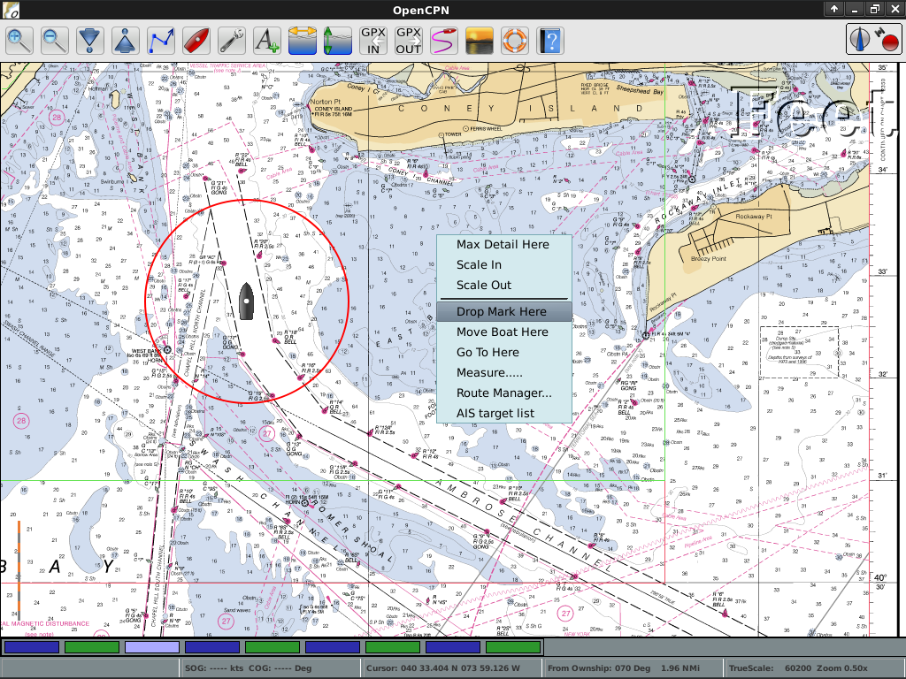

OpenCPN¶
Tengeri GPS navigációs program¶
OpenCPN egy ingyenes navigációs szoftver biztosít, mely minden típusú és méretű hajók kormányánál és offline útvonal tervezésnél is használható. Aktív tengerész csoport fejlesztette, valós feltételek mellett használták a program teszteléséhez és finomításokhoz.
OpenCPN mutatja a hajó jelenlegi helyzetét, a sebességét és az útvonalát pontos navigációs térképeken, a dagállyal és az aktuális előrejelzésekkel együtt. Standard rádió kapcsolatokból kapott információk alapján más hajók pozíciója és iránya is látható.
Ahogy a hajó halad újabb térképeket választ és jelenít meg a szoftver, a felhasználó által meghatározott felbontásban és részletességgel. A felhasználó továbbá útvonalakat és útpontokat vihet be, amely lehetővé teszi, hogy egy külső robotpilótával kommunikáljon a pontos útvonalkövetéshez.


Alapfunkciók¶
Az OpenCPN támogatja:
BSB raszter, C-MAP (CM93/2) és S-57 ENC vektor grafikonok
AIS input dekódolás
NMEA GPS vagy Gpsd daemon input
Útpont / robotpilóta navigáció
Korlátlan útvonal/jelölt pont létrehozás
Összetett grafikonok
Nemzetközi nyelv támogatás
Platform függetlenség
GRIB időjárás adatok
Részletek¶
Honlap: https://www.opencpn.org
Licenc: GNU General Public License (GPL) version 2
Szoftver verzió: 5.6.2
Támogatott platformok: GNU/Linux, Mac OSX, MS Windows
Támogatás: https://www.cruisersforum.com/forums/f134/